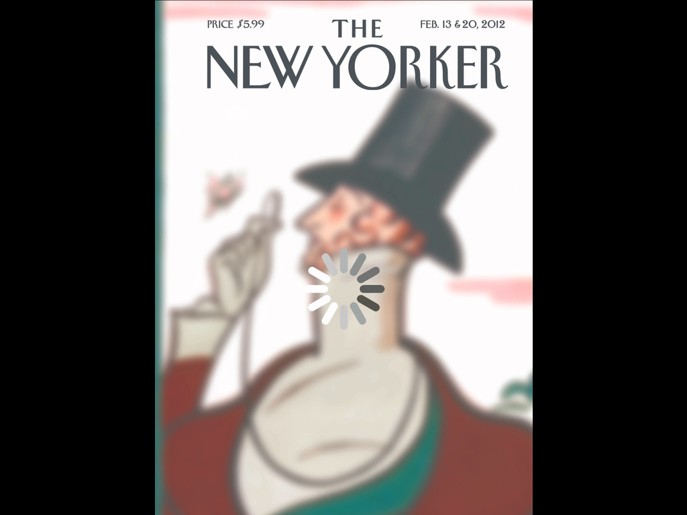

This is the office of Monsterswell, in Berlin, we are a company that makes maps. As you can see, the office itself is something of a map, at least if one compares it to many of the maps that I will present later on during this lecture. Maps themselves are increasingly askew, the maps that we might be used to have become less and less typical. However there are more interesting maps now than perhaps there ever have been, at least in terms of the diversity of the ways in which information is presented.
This map show Internet routing based on geo-tag density from Twitter, it represents the likely paths that Internet traffic will take in and out of Manhattan, New York.
This map, which is a Google project, somewhat similar to Mapnificent, is a map in which London hotels are mapped based on travel distance.
This map was a commission by Monsterswell, and produced by Arjan Scherpenisse and Vincent Meertens, it shows the time required to travel in and around Amsterdam, an altogether different type of map.
Maps can be all kinds of things, they can be models of a territory, arguments about how a territory can be visualised, or work to relate how the territory is perceived. Every map has an inherent value judgement connected with it.
Maps have, until recently, been considered mostly unproblematic, but there has been some kind of a shift brought about by the capacity of digital technology to reverse how maps are projected, we now see maps projected back on to the real world. One particular example of this is Google's Augmented Reality Browser, you might know it as
Layar. Layar's are maps, but not necessarily maps of geographic data, we might say simply, they are mappings. Google is also mapping the real world with Street View, but given such information, if you try to overlay this mapping back onto reality you get all kinds of strange clashes, which is perhaps what happens when you try and use computers to capture a capricious world, certain mis-mappings occur.
Perhaps the most pernicious of mis-mapping is the Quick Response, or QR Code. QR codes we designed to enable the machine readable world, but these hardly have any real world use, there are QR Codes placed in such places that it would be impossible to scan them without killing yourself. Perhaps they are not so much to be used, but work as cultural icons, precursors of a strange and inscrutable future. In china, there is a QR code of huge proportions located in the desert that is used to calibrate spy satellites, so, satellites read the QR Code from space and use it calibrate their own geo-location, which is something of a feedback loop, maps projected on the earth used to better survey the earth.
So, what happened? We put the Internet into maps, and that caused all kinds of bizarre feedback loops, but if we think about it maps are not the only place where we have transposed the Internet, it is becoming increasingly visible everywhere, its in my pocket for instance. So, the digital is having an effect back on the world, sometimes I'm not sure what to make of it.

There is a cover of an issue of the New Yorker Magazine that replicates the "loading" icon, and sculptural works in which pixialisation replaces the 3D sculpture with a mesh of squares, and furniture designed to replicate what could perhaps previously only have been viewed in Auto CAD, it all mimics the visual aesthetic of the digital world.
In our vision digital has absolutely nothing to do with media, for us, digital is something totally different, digital for us is a change in behaviour, a change in buying behaviour, if you look at it from a marketing perspective. We look at how the digital transformed the world, and how the digital has transformed you, and how the digital has transformed the way we make decisions, whether that be decisions on where to travel, where to eat, what to buy, etc, all these decisions are influenced by the fact that we are hyper-connected with each other, and with each others opinions, reviews, ratings, search results, etc, etc.